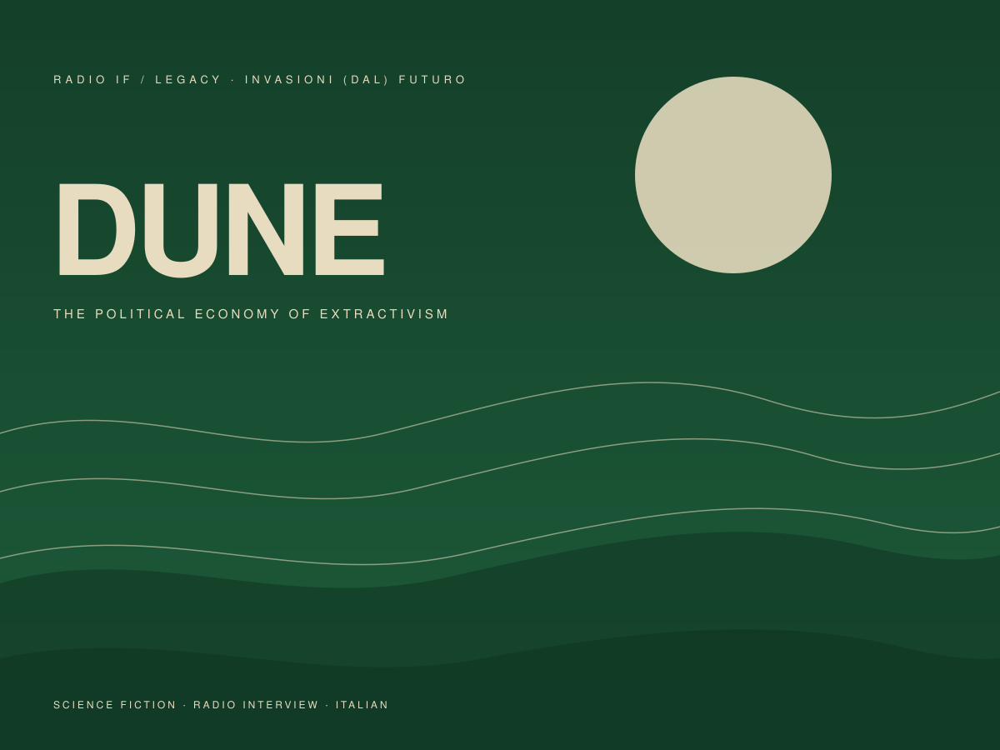
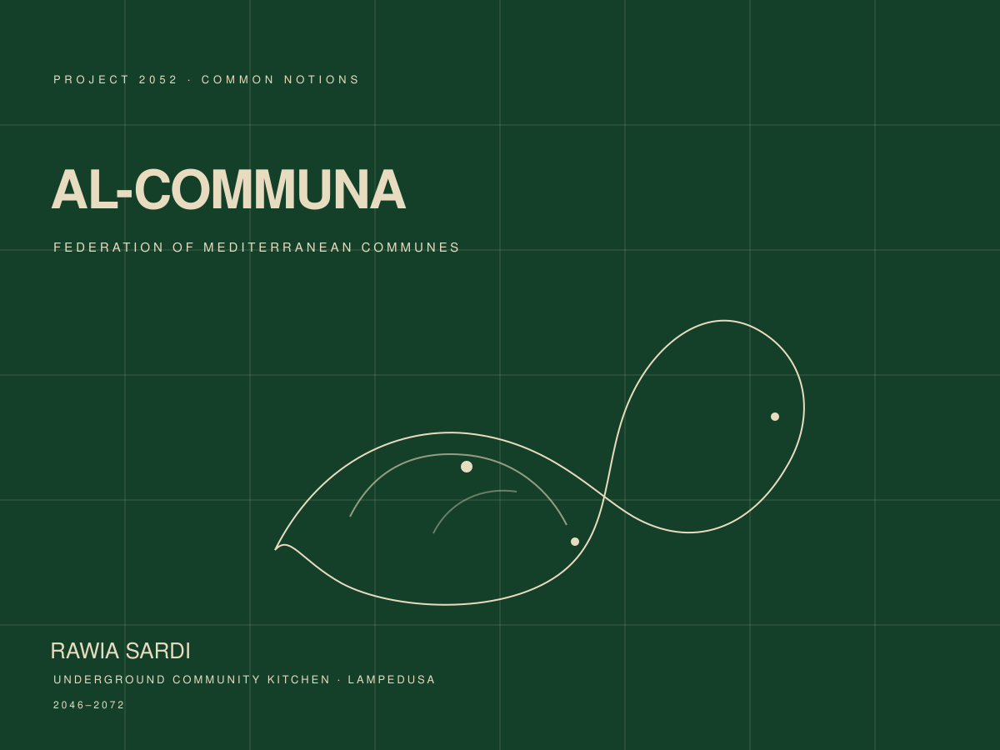
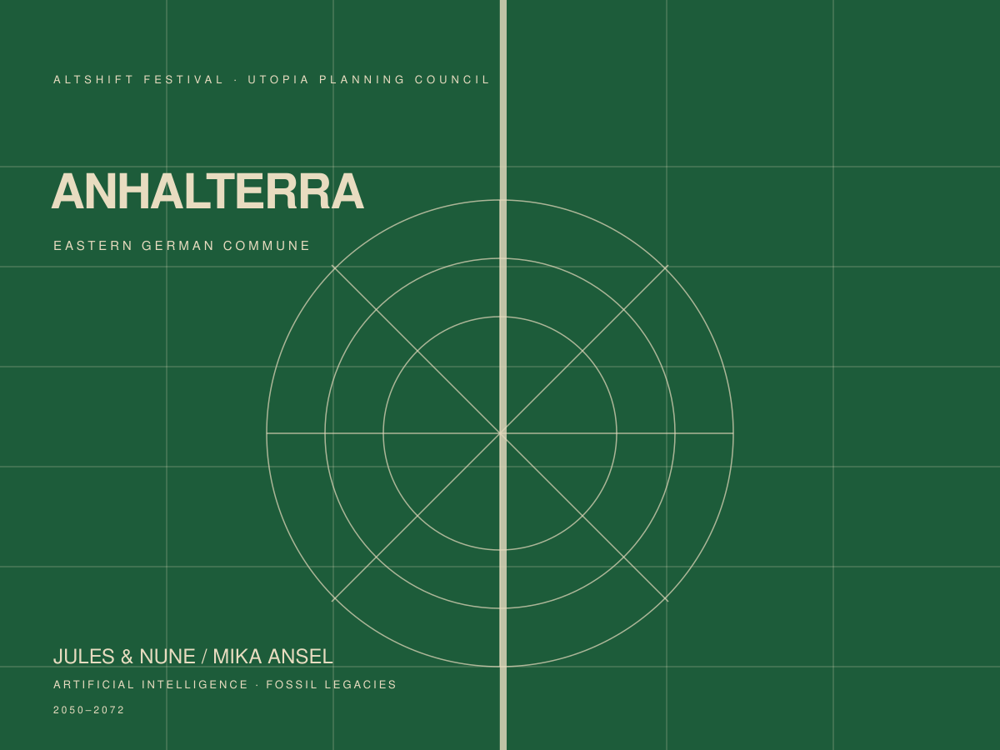

Radio. Dune and the political economy of extractivism
A radio conversation on science fiction, extraction, and the politics of the desert — recorded at the Invasioni (Dal) Futuro Festival.
06 Speculative fiction
World-building as a way of thinking about possible energy futures. I write short pieces and take part in radio conversations and festival deliberations that imagine institutions beyond fossil capitalism.
Speculative fiction is a research companion. It makes visible the social arrangements that technical scenarios leave out: who deliberates, who belongs, what counts as a resource, and how futures are contested. The pieces below are set in the same decades as the transitions I study — but they begin from the institutions and ecologies that a just future might require.

A radio conversation on science fiction, extraction, and the politics of the desert — recorded at the Invasioni (Dal) Futuro Festival.

On the Federation of Mediterranean Communes “al-communa” (2046–2072). Published as part of Project2052 by Common Notions.

A deliberation on the future of technology on the Eastern German commune “Anhalterra” (2050–2072).
A deliberation on fossil legacies on the Eastern German commune “Anhalterra” (2050–2072).